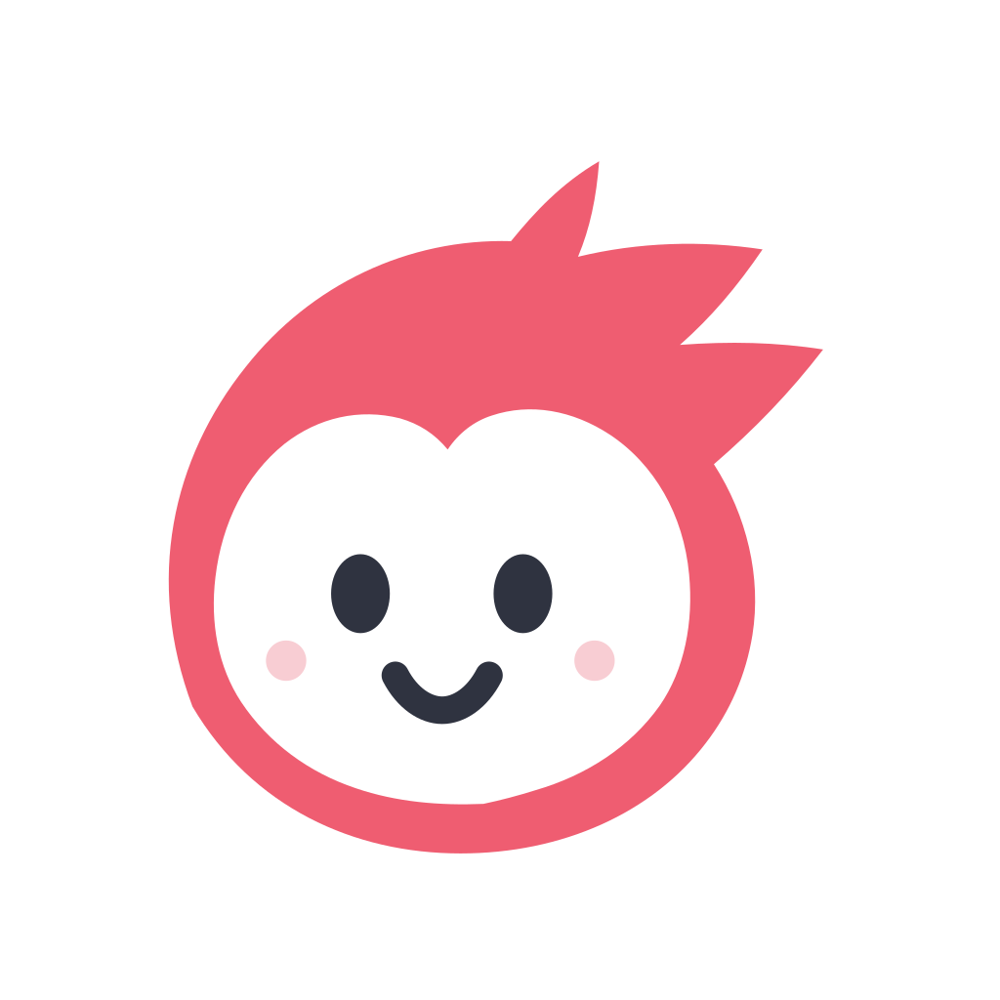

成長段階によって、伸ばしたい力も、避けたい負担も変わります。骨や関節が発達途中の子どもにとって、何を・どのくらいやるかは大切なポイント。年齢別の目安を整理しました。
未就学（〜6歳）：とにかく多様に、短時間で
前述のとおり、この時期は多様な動きの経験が最優先。ひとつの動作の反復より、いろいろな遊びを短時間で。勝ち負けより「できた！」の積み重ねを大切にしましょう。
小学校低学年（7〜9歳）：ゴールデンエイジの入口
動きを見て覚える力が高まる時期。基礎的な技術を楽しく身につけるのに向いています。特定競技を始めるなら、まずは週1〜2回から無理なく。
同じ動作の反復（投球・ジャンプの過多など）は、成長期の関節に負担がかかることがあります。痛みのサインを見逃さないことが大切です。
小学校高学年（10〜12歳）：技術が伸びやすい
神経系の発達がピークを迎え、複雑な動きの習得が進みます。専門的な練習を増やしやすい一方、体は成長途中。練習量と休養のバランスを意識しましょう。
中学生以降：体づくりと両立を
身長が伸びる時期は、一時的に動きがぎこちなくなることも。これは自然な過程です。ストレッチやケアを習慣にして、けがを防ぎながら継続することが何より大切です。
「早期専門化」には注意も
一つの競技に早くから絞り込む「早期専門化」は、上達が早く見える一方で、同じ部位への負担が集中したり、楽しさを見失って燃え尽きてしまうこともあります。小学生のうちは複数の運動を並行する「マルチスポーツ」の考え方が、世界的にも見直されています。
大切なのは「続けられる量」
どの年齢でも共通するのは、無理のない範囲で続けること。週末だけ、週1回からでも力は十分に育ちます。お子さまの様子を見ながら、睡眠や休養とのバランスを最優先に考えましょう。
「痛み」は我慢のサインではない
成長期の子どもは、関節や骨の端にある「成長軟骨」がまだやわらかく、使いすぎによる障害（オスグッド病や野球肘など）が起こりやすい時期です。これらは“がんばりの証”ではなく、体からのSOS。「動き始めだけ痛い」「特定の動作で痛い」が続くときは、休ませて専門家に相談しましょう。
「どのくらいがやりすぎ？」──数字で決まっている競技もある
感覚論ではなく、具体的な数字の目安が公的に示されている競技もあります。代表例が野球です。日本臨床スポーツ医学会の「青少年の野球障害に対する提言」では、成長期の肘・肩を守るために、小学生の全力投球は1日50球以内、週200球以内が目安とされています。「まだ投げられる」と本人が言っても、成長軟骨へのダメージは痛みより先に進むことがあるため、数を守ることが将来の選手生命を守ります。
また、WHOのガイドラインでは5〜17歳の子どもについて、1日平均60分の中強度以上の身体活動に加え、週3日程度は筋肉や骨を強くする運動を取り入れることが推奨されています。「量の上限」と「必要な量」の両方に目安があると知っておくと、判断がぶれません。
身長がグンと伸びる時期は、けがの要注意期
理学療法士が特に注意して見るのが、身長が最も伸びる時期（発育のスパート期）です。骨が先に伸び、筋肉や腱の柔軟性が追いつかないため、一時的に体が硬くなり、動きがぎこちなくなります。この時期はオスグッド病などの成長期障害が集中しやすいことが知られています。「最近急に背が伸びた」と感じたら、練習量を少し控えめにし、ストレッチを丁寧に──これだけでリスクは大きく変わります。
左右・全身をバランスよく使う
同じ動作の繰り返しは、体の一部に負担を集中させます。利き手・利き足ばかりを使う競技でも、反対側を使う遊びやストレッチを取り入れると、体のバランスが整いやすくなります。複数のスポーツを並行する子のほうが、特定の障害が起きにくいという指摘もあります。
休養も「トレーニング」の一部
体力や技術が伸びるのは、練習している最中ではなく、休んでいる間に体が回復・成長するからです。週に最低1日はしっかり休む、睡眠時間を削らない──この当たり前が、成長期にはとくに重要になります。
年齢ごとに、伸ばしたい力も、気をつけたい負担も変わります。大切なのは「いまの時期に合った関わり方」をすること。迷ったら、無理のない量から・楽しさを優先に──この2つを基準にすれば、大きく外れることはありません。
- 日本臨床スポーツ医学会「青少年の野球障害に対する提言」
- WHO「身体活動・座位行動ガイドライン」（2020）
- 米国小児科学会（AAP）スポーツの早期専門化に関する臨床レポート

理学療法士の監修のもと、現場とエビデンスの両面から発信しています。
運動が苦手な子でも、楽しく続く習い事の見つけ方